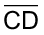
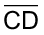

Unidade 2
Semelhanças
54
Semelhanças
Carla é arquiteta e está fazendo a planta da fachada de uma casa. Observe na fotografia a fachada da casa e o respectivo desenho.
Yuri Arcurs / People Images
55
converse
1. Explique como Carla fez para realizar o desenho da fachada dessa casa.
2. Na situação apresentada, as medidas do desenho são proporcionais às medidas reais? Em relação às medidas dos ângulos correspondentes, eles são proporcionais ou congruentes?
3. Observando as medidas representadas na fotografia e as medidas representadas no desenho, qual foi a escala utilizada?
56
Relembrando razão e proporção
- Observe as seguintes situações para relembrar razão e proporção. Troque ideias com um colega e apresentem soluções para as questões propostas.
Situação 1
Solange queria medir o comprimento do tampo de uma mesa de centro, mas não tinha um metro ou uma régua para fazê-lo. Decidiu, então, realizar essa medição utilizando o palmo. Sua filha, Marcela, de 10 anos, quis ajudá-la e também mediu o tampo usando o palmo.
Solange encontrou como medida 6 palmos, e sua filha, 9 palmos.

- Por que as medidas encontradas são diferentes?
- Qual é a razão entre a medida obtida por Solange e a encontrada por Marcela?
Note que 2 palmos de Solange equivalem a 3 palmos de Marcela.
57
Razões especiais
Vimos que algumas razões são utilizas em diversas situações e muitas delas envolvem duas ou mais grandezas, observe algumas:
- velocidade média — é obtida pela razão entre a medida de distância percorrida e a medida de intervalo de tempo gasto.
- densidade demográfica — é obtida pela razão entre o número de habitantes da população e a medida de área da região.
- IMC — Índice de Massa Corporal, é a razão entre a massa (peso) de uma pessoa e o quadrado da sua altura, sendo a massa em quilogramas (kg) e a altura em metros (m).
- escala — é a razão entre uma medida de comprimento no desenho e a medida de comprimento correspondente na realidade.
Proporção
Situação 2
Victor deseja ampliar uma fotografia que tem 10 cm de largura por 15 cm de comprimento, de modo que sua largura tenha 12 cm.
- Qual deverá ser a medida do comprimento da ampliação para que a foto fique proporcional ao tamanho original?

Farol das Conchas. Ilha do Mel, PR, 2015.
Para resolvermos as situações propostas, utilizamos os conceitos de razão e proporção estudados nos anos anteriores. Vamos relembrá-los?
Dados dois números reais, a e b, com b ≠ 0, denomina-se razão entre a e b o quociente entre ele, ou seja, ou a:b
Proporção é a igualdade entre duas razões.
Propriedade fundamental da proporção:
⇔a⋅d=b⋅c
58
Situação 3
Em uma editora de livros existem 3 impressoras que imprimem em 4 dias, ligadas por 6 horas, 30 000 páginas. Para aumentar a quantidade de impressos será incluído uma máquina e aumentado o tempo de 6 para 8 horas diárias. Quantas páginas serão impressas em 5 dias?
Vamos entender como podemos chegar a essa solução organizando os dados em um quadro:
|
Impressoras |
Dias |
Horas |
Páginas impressas |
|
3 |
4 |
6 |
30 000 |
|
4 |
5 |
8 |
X |
Devemos analisar a grandeza “páginas impressas” com as demais grandezas. Ao observar os dados, podemos perceber que:
- A quantidade de impressoras e a quantidade de páginas impressas são grandezas diretamente proporcionais, pois quanto mais impressoras trabalhando, maior a quantidade de impressões.
- O número de dias e a quantidade de páginas impressas são grandezas diretamente proporcionais, pois quanto mais dias trabalhando, maior a quantidade de impressões.
- O número de horas e a quantidade de páginas impressas são grandezas diretamente proporcionais, pois quanto mais horas trabalhando, maior a quantidade de impressões.
Assim, temos:
|
Impressoras |
Dias |
Horas |
Páginas impressas |
|
3 |
4 |
6 |
30 000 |
|
4 |
5 |
8 |
x |
Como todas as grandezas são diretamente proporcionais à grandeza “páginas impressas”, então a multiplicação de suas razões corresponde à razão da grandeza que se tem a incógnita x.
59
Serão impressas 66 666 páginas por dia.
Neste exemplo, utilizamos a regra de três composta.
Segmentos proporcionais
Podemos calcular a razão entre as medidas de dois segmentos de reta. Observe:

Usando a mesma unidade de medida, a razão entre as medidas dos segmentos  e
 pode
ser representada por:
e
 pode
ser representada por:
A razão entre as medidas dos segmentos AB e CD pode ser representada por:
Agora, observe os segmentos AB e CD é
Agora, observe os segmentos AB, CD, EF e GH:

- Troque ideias com um colega e resolvam as questões a seguir, no
caderno:
- Com o auxílio de uma régua, meçam os segmentos AB, CD, EF, e GH e anotem os valores encontrados.
60
Quando existe a proporção dizemos que os segmentos AB, CD, EF, e GH são proporcionais, nessa ordem
Se formam uma proporção, então temos: AB ∙ GH = CD ∙ EF.
⇔ 2 ∙ 12 = 4 ∙ 6
Encontre soluções
- Escreva em seu caderno:
- o número de alunos que há em sua classe;
- o número de meninas que há em sua classe;
- o número de meninos que há em sua classe;
- a razão entre o número de meninas e o total de alunos da classe;
- a razão entre o número de meninos e o total de alunos da classe;
- a razão entre o número de meninas e meninos da classe;
- a razão entre o número de meninos e meninas da classe.
- Escreva a razão entre x e y,
na sua forma
mais column-flexs, em que:
- x = 15 cm e y = 20 cm
- x = 4 cm e y = 80 mm
- x = 3 km e y = 12 000 m
- x = 32 m e y = 4 000 cm
- Em uma prova de Química composta de 20 questões, Juliana errou 12 delas. Calcule a razão do número de acertos para o número total de questões. Qual o significado dessa razão?
- Determine a razão entre:
- a medida do lado de um triângulo equilátero e o perímetro desse triângulo.
- a soma das medidas dos ângulos internos de um triângulo e a soma das medidas dos ângulos internos de um quadrilátero.
61
- 5)Verifique, em cada uma das alternativas, se as razões formam uma
proporção.
a) c)
b) d)
- 6)No segmento AB, o ponto C está localizado de tal modo que . Sabendo-se que CB = 6 cm, qual é a medida do segmento AC?
- 7)A razão entre as alturas de dois prédios é Sabendo que a altura do prédio maior é igual a 75 m, determine a altura do outro prédio.
- 8)Rogério está construindo uma maquete que representa sua casa, a qual tem 6 m de frente, 24 m de fundos e 5 m de altura. Para a construção da maquete, ele resolveu fazer a frente com 15 cm. Quais serão as medidas que ele deverá adotar para os fundos e para a altura da maquete, a fim de que a proporção das medidas da casa seja mantida?
- 9)Em um segmento OP, Q é um ponto entre O e P, e está localizado de tal modo que . Sabendo que OP = 15 cm, determine a medida dos segmentos OQ e QP.
- 10)Um pedaço de arame de 80 cm de comprimento foi dividido em duas partes, obtendo-se uma razão de entre elas. Qual é o comprimento do menor pedaço de arame?
- 11)(ENEM-2020) Um agricultor sabe que a colheita da safra de soja será
concluída
em 120 dias caso utilize, durante 10 horas por dia, 20 máquinas de um modelo antigo, que colhem
2 hectares por
hora. Com o objetivo de diminuir o tempo de colheita, esse agricultor optou por utilizar
máquinas de um novo
modelo, que operam 12 horas por dia e colhem 4 hectares por hora. Quantas máquinas do novo
modelo ele necessita
adquirir para que consiga efetuar a colheita da safra em 100 dias?
- 7
- 10
- 5
- 40
- 58
- 12)Reúna-se com um colega e criem juntos uma situação-problema, envolvendo o cálculo de duas ou três grandezas diferentes. Em seguida, troquem os cadernos com outra dupla, para que um resolva o problema do outro.
62
Paralelismo
Observe as seguintes retas:
As retas r, u e s são coplanares e chamadas de feixe de retas paralelas. A reta t, que corta esse feixe, chama-se reta transversal.
Indicamos o feixe de retas paralelas da seguinte maneira: r // s // u.
Teorema de Tales
Segundo a tradição, a Geometria demonstrativa começou com Tales de Mileto, um dos “sete sábios” da Antiguidade, durante a primeira metade do sexto século a.C. Segundo parece, Tales começou sua vida como mercador, tornando-se rico o bastante para dedicar a parte final de sua vida ao estudo e a algumas viagens. Diz-se que ele viveu por algum tempo no Egito e que despertou admiração ao calcular a altura de uma pirâmide por meio da sombra. [...]
EVES, Howard. Introdução à história da
Matemática.
Trad. Hygino H. Domingues. 2. ed. Campinas: Editora da Unicamp, 1997. p. 94-95.
Ilustração de Tales de Mileto feita por Ernst Wallis para o
livro
Illustrerad verldshistoria utgifven av E. Wallis (Volume
I), de 1875.

Vamos inicialmente estudar uma propriedade importante, a propriedade em um feixe de retas paralelas, para então enunciar o Teorema de Tales.
Na figura, temos as retas transversais u e v, que determinam sobre o feixe de retas paralelas r, s e t os segmentos de reta AB, BC, DE e EF. Temos ainda que AB e BC são congruentes entre si, ou seja, AB = BC
63
Como os segmentos AB e BC são congruentes, a razão entre suas medidas é 1, ou seja, = 1.
Vamos mostrar que DE e EF também são congruentes entre si e que, por isso, a razão entre eles também é igual a 1.

Dessa forma, temos que:
- ADGB é um paralelogramo.
Logo,AB = DG - BEHC é um paralelogramo.
Logo, BC = EH - Como AB = BC, então DG = EH
- Os ângulos DGE e EHF são correspondentes, pois s // t e DG // EH.
Logo, DGE ≡ EHF. - Os ângulos GDE e HEF também são correspondentes, pois r // s e DG // EH. Logo, GDE ≡ HEF.
64
Então:
△DGE = △EHF pelo caso de congruência ALA
Então DE = EF ou seja, = 1
Se um feixe de retas paralelas determina segmentos congruentes sobre uma transversal, então os segmentos de retas determinados sobre qualquer outra transversal também são congruentes entre si.
E se os segmentos de reta determinados pelas transversais não forem congruentes? Qual relação podemos estabelecer entre eles? Vejamos:
Considerando r // s // t e m e n as retas transversais sobre essas retas paralelas, vamos utilizar uma unidade de medida x, sendo x um número racional, tal que AB = 3x e BC = 4x.
Observe que DE = 3y e EF = 4y.
Assim, temos:
Podemos concluir que AB e BC são proporcionais a DE e EF, ou seja, .
65
Por meio da demonstração feita, podemos enunciar o Teorema de Tales:
Um feixe de retas paralelas determina, sobre as retas transversais, segmentos de retas que são proporcionais.
Atenção!
- Para demonstrar que , consideramos como unidades de medidas números racionais, porém essa proporção também é válida quando as medidas dos segmentos são números irracionais.
Vamos agora verificar a aplicação do Teorema de Tales.
- Com uma régua, meçam os segmentos AB, BC, DE e EF formados pelo feixe de retas paralelas cortadas por duas transversais. Anotem essas medidas no caderno.
Verifiquem se as medidas dos segmentos AB, BC, DE e EF, nessa ordem, formam uma proporção. Anotem suas conclusões no caderno.
2. Observem a situação a seguir e expliquem como podemos calcular o valor de x. Depois, calculem-no.
Na figura abaixo, r // s // t.

66
Encontre soluções
- Verifique, nos itens a seguir, quais representam uma proporção em relação à figura dada, sendo a // b // c.
- 2. Em seu caderno, determine o valor de x e y, sendo a // b // c.

67
- 4. Sendo a // b // c, MO = 30 cm, PQ = 18 cm e QR = 22 cm, determine a medida do segmento NO .

- 5. No triângulo ABC, os segmentos DE e BC são paralelos. Calcule a medida dos segmentos AD e BD .
- 6. Calcule o perímetro dos triângulos a seguir, sabendo que
DE
//
BC
a)